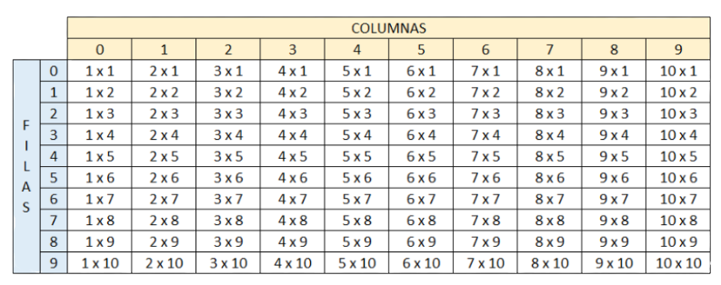

1. Crear un vector de tipo Entero con 5 posiciones, llenarlo con información solicitada al usuario. Después de recoger toda la información, se requiere imprimir el índice de cada posición en el arreglo con su valor de la siguiente manera:
import java.util.Scanner;
public class App {
public static void main(String[] args) {
int indice ;
int[] usuario;
usuario = new int[5];
try (Scanner scanner = new Scanner(System.in)) {
System.out.println("Ingrese primera posicion");
usuario[0] = scanner.nextInt();
System.out.println("Ingrese segunda posicion");
usuario[1] = scanner.nextInt();
System.out.println("Ingrese tercera posicion");
usuario[2] = scanner.nextInt();
System.out.println("Ingrese cuarta posicion");
usuario[3] = scanner.nextInt();
System.out.println("Ingrese quinta posicion");
usuario[4] = scanner.nextInt();
for(indice =0; indice <=4; indice ++){
System.out.println("[" +indice+"] = " + usuario[indice]);
}
}
}
}
2. Crear un arreglo de números enteros de 20 posiciones, el cual, debe ser llenado con números aleatorios entre 1 y 100; después de haber llenado dicho
arreglo, se debe volver a recorrer utilizando un ciclo diferente al que se usó para llenarse e imprimir los números pares e impares. Ejemplo:
Números pares: 2, 4, 6, 8, 10
Números impares: 1, 3, 5, 7, 9
import java.util.Random;
public class App {
public static void main(String[] args) {
int indice,num,dato,i,j;
int[] vector;
vector = new int[20];
for(i =1; f <=19; i ++){
dato=Math.random(100);
vector[i]=dato;
num=0;
if(vector[i]%2==0){
System.out.print( vector[i] + " Es par" );
}
else{
System.out.print( vector[i] + " Es Impar" );
}
}
}
}
3. Imprimir los números primos del 1 al 1000, el resultado debe ser buscado de forma matemática.
import java.util.Scanner;
public class App {
public static void main(String[] args) {
int indice ,num,dato,n,i;
for(n =1; n <=100; n ++){
num=0;
for(i=1;i<=n;){
if(n%i==0){
num=num+1;
}
}
if(num==2){
System.out.println( n + " Es primo");
}
else
{
System.out.println( n + "No es primo");
}
}
}
}
4. Dada la siguiente matriz bidimensional, el cual debe de quemar en el código
01 02 03 04 05
06 07 08 09 10
11 12 13 14 15
16 17 18 19 20
Utilizando el conocimiento adquirido, a excepción de hacerlo de forma manual, imprima la siguiente matriz bidimensional.
01 02 03 04 05
10 09 08 07 06
11 12 13 14 15
20 19 18 17 16
public class App {
public static void main(String[] args) {
int f,c,num ;
int[][] matriz;
matriz = new int[4][5];
num=0;
for(f =0; f <=3; f ++){
for(c =0; f <=4; f ++){
num=num+1;
matriz[f][c]=num;
System.out.print( matriz[f][c] + " " );
}
}
}
}
5. Se debe de imprimir el siguiente cuadro

El usuario deberá insertar la fila y columna de la cual desea ver el resultado, el resultado de cada celda debe estar previamente calculado en una
matriz bidimensional la cual cada resultado obedecerá a la fila y columna insertada por el usuario.
import java.util.Scanner;
public class App {
public static void main(String[] args) {
int f,c ;
int[][] matriz;
matriz = new int[11][11];
for(f =1; f <=10; f ++){
for(c =1; f <=10; f ++){
matriz[f][c]=c;
System.out.print( matriz[f][c] + " X "+ f + " " );
}
System.out.print( " " );
}
}
}